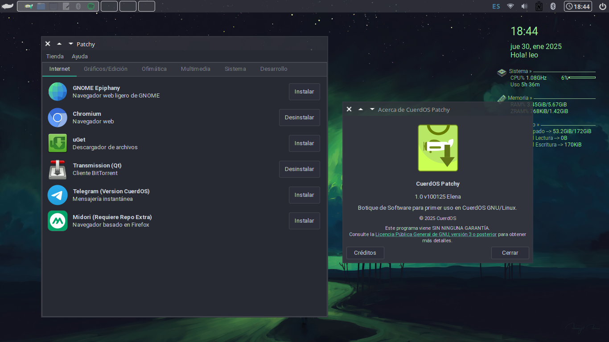

Patchy

Patchy es una minitienda o botique de software de primer uso en CuerdOS GNU/Linux. Con una interfaz gráfica amigable basada en Python 3, GTK y Qt, permite instalar aplicaciones recomendadas por el equipo de CuerdOS.
CuerdOS GNU/Linux

CuerdOS es una distribución GNU/Linux de origen español enfocada en la estabilidad y el rendimiento constante en computadoras de cualquier rango, sin perder ninguna funcionalidad.
Yelena Hello

Bienvenida de CuerdOS GNU/Linux, para darle su primer bienvenida a nuestra distribución. Potenciada por Software libre y tecnologías libres como Python & Thonny, R & RStudio y Go & Geany.